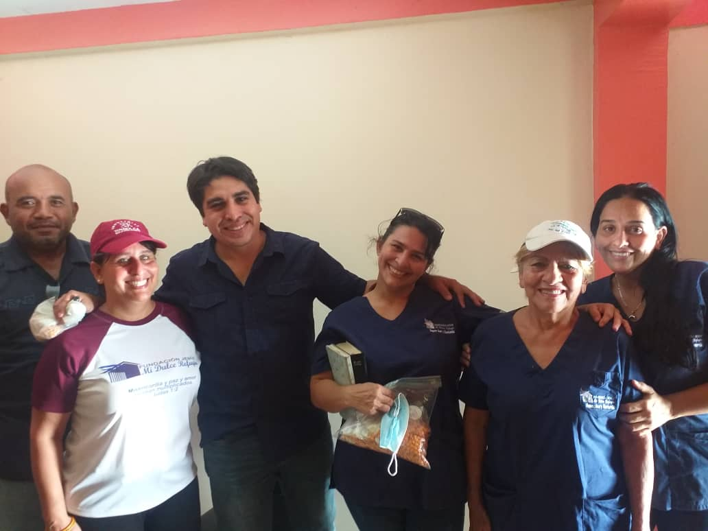
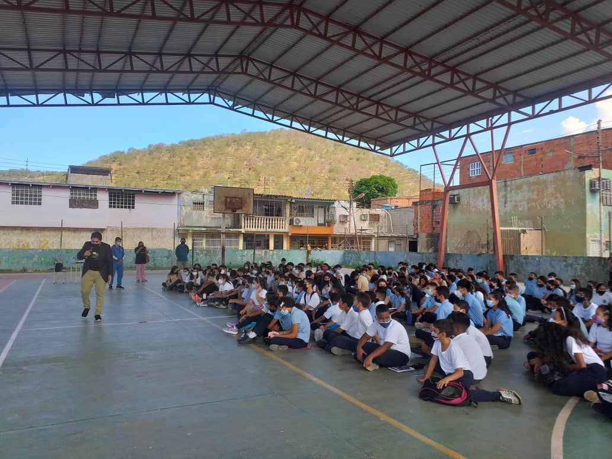
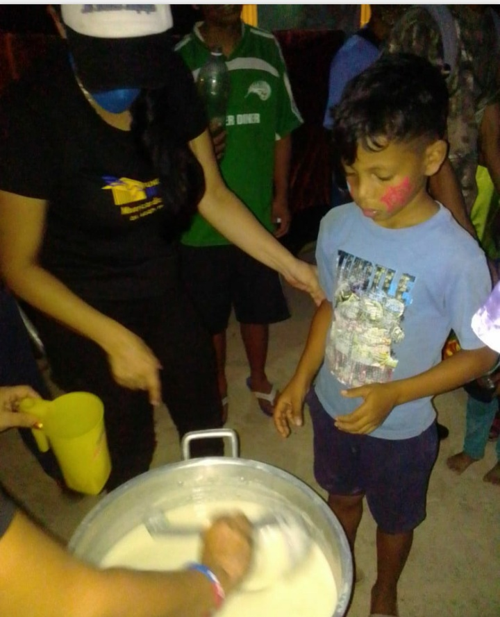

Contamos con un equipo dispuesto ayudar las personas con situacion de pobreza en la Parroquia El Carmen y cualquier sitio del municipio Simon Bolivar.
Un mandamiento nuevo os doy: Que os améis unos a otros; como yo os he amado, que también os améis los unos a los otros.
Así como el Hijo del Hombre no vino para ser servido, sino para servir y para dar su vida en rescate por muchos.
La educación es el arma más potente que puedes usar para cambiar el mundo (Nelson Mandela).
Realizamos charlas en instituciones educativas sobre temas como la educacion sexual, el bulling, No a las Drogas, enseñanzas cristianas entre otros.
Hacemos donaciones de utiles escolares ayudando a mas de 60 niños y adolecentes por institucion que no cuentan con el material necesario para estudiar.
Recibimos ayuda de de los integrantes de las iglesias Centro Familiar Cristiano Peniel en lecheria e Iglesia Bautista Memorial ubicada en boyaca V.
13 Porque vosotros, hermanos, a libertad habéis sido llamados; solamente que no uséis la libertad como ocasión para la carne, sino servíos por amor los unos a los otros.
14 Porque toda la ley en esta sola palabra se cumple: Amarás a tu prójimo como a ti mismo.